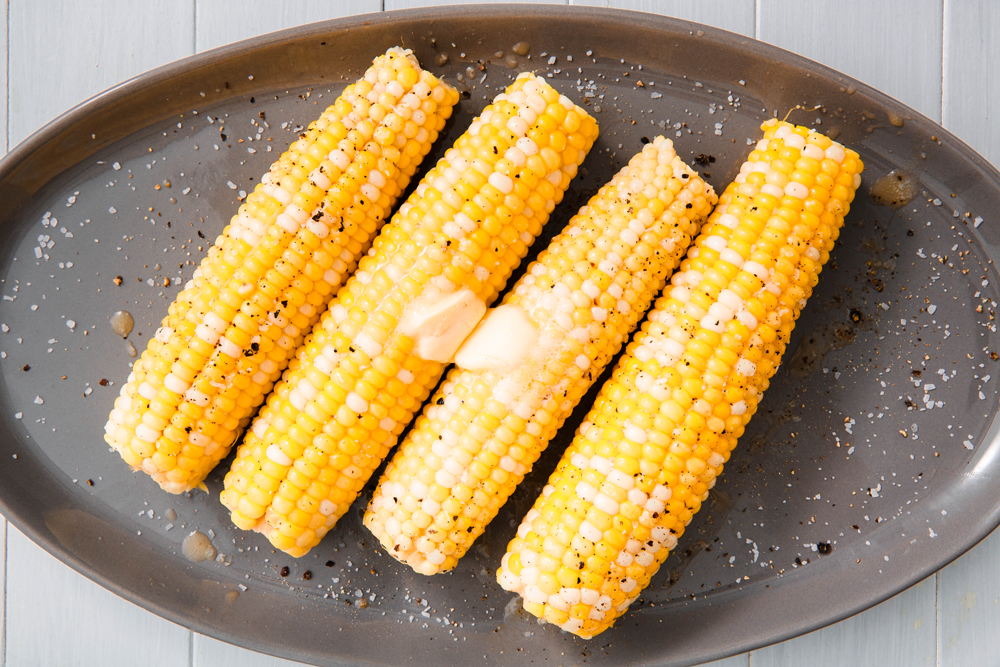
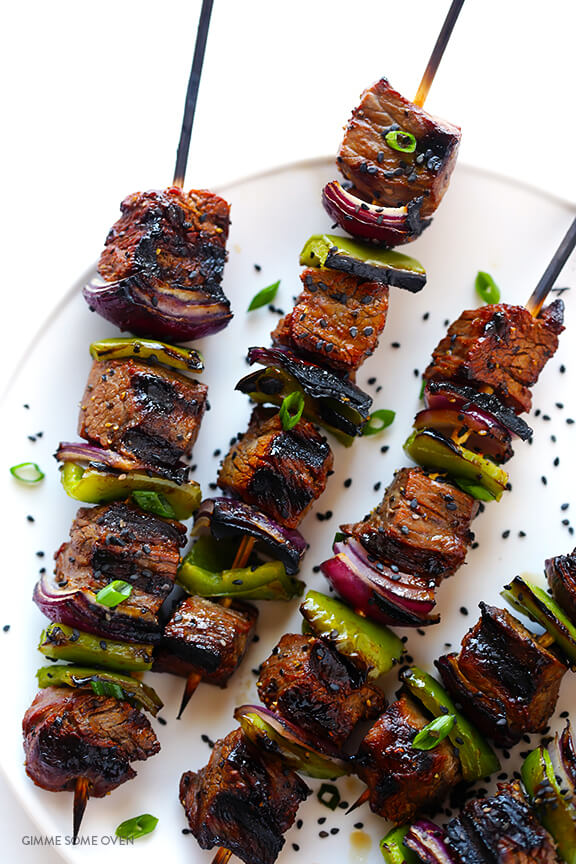
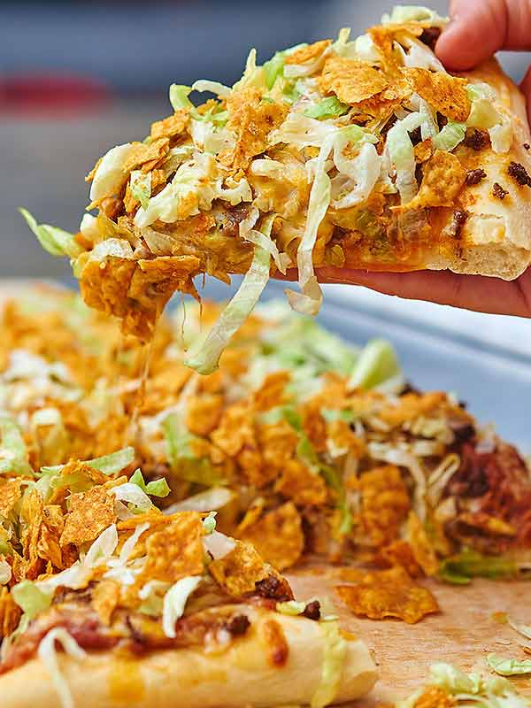

One of my top favorite foods is corn on the cob. I like that food so much because it has such and amazing taste when it is smoothered in butter. Another reason why it is so good is because it is healther for you in some types of ways. Corn is also very easy to cook. I either simmer then in a pop on the over or grill them and add some spices. Corn can go good as a side with many foods for the vegetable.
This is a good foods for many reasons. The food is good one nice summer days when having a cookout or out swimming in a pool. I like this food because it is well marrinaed and the peppers give it an even better taste. They are also very easy to grill and take only about 15 minutes depending on how you like them cooked. I also like them a lot because you can add different spices to the kabob to make it how you like it.
Happy Joe was the founder of Happy Joe's Taco Pizza in 1972. This pizza is very good because the toppings that are on it and the beans in the pizza as a sauce. Even though the pizza is messy it is worth the buy. The best way to eat the taco pizza is with the Happy Joes pizza sauce on it. A plus about this food is that you don't have to make it you can either go and dine in at Happy Joes or have it delivered right too you.
